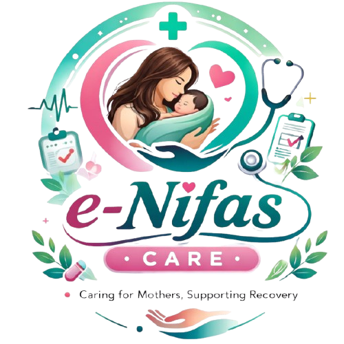

e-NifasCare
Caring for Mothers, Supporting Recovery
Asisten kesehatan terpercaya untuk mendampingi Ibu selama masa pemulihan 42 hari pasca melahirkan.
🚨 Tanda Bahaya
🤱 Nutrisi & ASI
🧠 Support Mental
Mulai Monitoring →